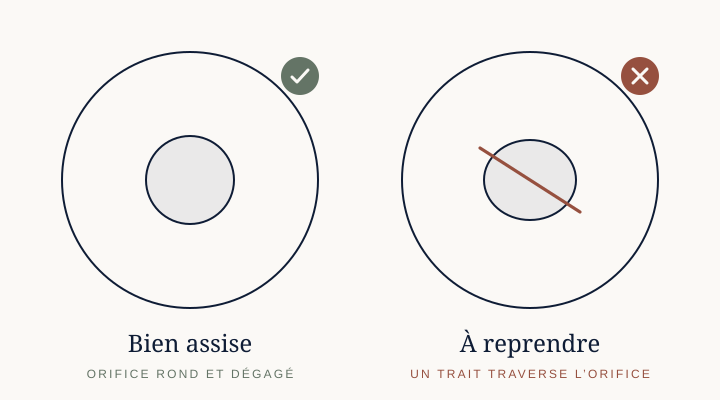

Astuces et précautions
Les bons gestes.
Du premier coup.
Quelques minutes pour prendre la main — ensuite, tout se fait sans y penser.
01 · Avant de changer de forme
Laisser passer l’air.
Déplier, replier ou couder fait entrer ou sortir de l’air. Flacon vide, retirez le bloc ; flacon rempli, desserrez simplement la bague. Resserrez une fois le geste terminé.
02 · Déplier, replier
Les doigts au bon endroit.
N’introduisez pas le doigt dans le flacon : il toucherait l’intérieur, là où ira le lait. Placez deux doigts de part et d’autre du soufflet visé : tout l’effort porte sur lui.
03 · Le mouvement de torsion
Étirer en tournant.
Tenez le flacon par ses deux extrémités et étirez-le en le tournant d’un côté, puis de l’autre, comme pour essorer un linge : la torsion accompagne l’effort et fait basculer le soufflet. Tourné d’un seul côté, il reste à demi déplié — utile pour couder le flacon. Quelle que soit sa position, il tient seul et ne se referme que si vous le décidez.
04 · Zéro fuite
La tétine bien assise.
Vérifiée d’un coup d’œil.
Regarder. Retournez le bloc : bien entrée dans sa base, la tétine laisse voir un orifice rond et dégagé. Repliée sur le côté, un trait le traverse.
Corriger. Posez le capuchon bien droit et pressez verticalement, jusqu’au bout. Si la tétine résiste, faites-la entrer dans sa base avec des doigts propres.

Si bébé prend du lait en poudre
De 6 à 12 mois.
Préparé d’avance.
Avec sa tétine à débit 6 mois, BIBEON accompagne le lait en poudre de 6 à 12 mois. Pour un bébé plus jeune, remplacez-la par une tétine à col étroit adaptée à son âge.
05 · Sécher en urgence
Sec jusqu’au fond.
Même pressé.
Pas le temps de laisser sécher à l’air ? Un tissu ultra propre à usage unique suffit : descendez jusqu’au fond, ou ciblez une goutte isolée. Séchez aussi la collerette et le mamelon de la tétine, la bague et le capuchon, avant d’y verser la poudre.
06 · Conserver la dose
À l’abri.
Jusqu’au repas.
Une fois la poudre versée et le bloc refermé, rangez le flacon dans son pochon, un sac ou un placard, à l’abri de la lumière.
07 · Quinze jours
15jours
Quinze jours,
à une condition.
Pré-dosé dans les règles — flacon parfaitement sec, tétine bien assise et vérifiée — BIBEON garde la poudre jusqu’à quinze jours. Encore faut-il que le lait lui-même ne soit pas périmé : sa date fait foi.
08 · L’eau en dernier
La graduation mesure un niveau.
Pas l’eau versée.
La poudre déjà dans le flacon occupe une partie du volume : le trait lu n’est plus la quantité d’eau ajoutée. Chez vous, préparez un biberon comme d’habitude et relevez le niveau du lait reconstitué. Dehors, avec le même lait et le même nombre de mesurettes, ajoutez l’eau, mélangez, puis complétez jusqu’à ce niveau.
Ce repère vaut pour un lait et une dose : refaites-le si vous en changez.
Tous les gestes, dans l’ordre.
Revoir le mode d’emploi →